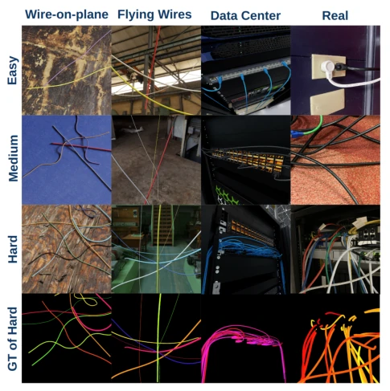
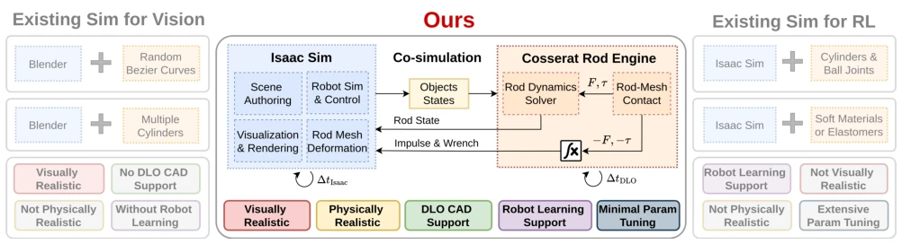
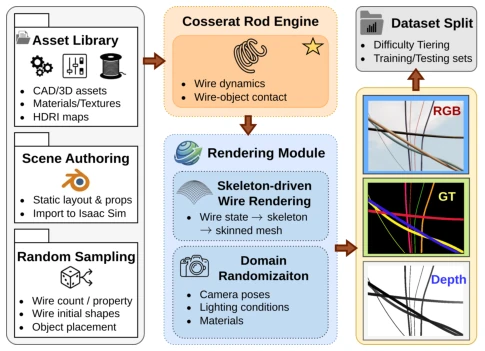
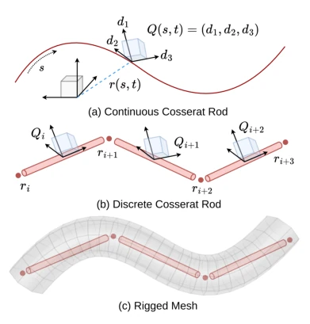
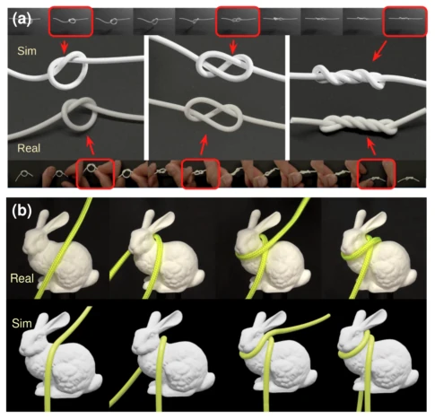

This paper threw a bombshell at the "wire segmentation" challenge in Embodied AI. The WireSeg-32K dataset indeed addresses the pain points of expensive annotation and physical unrealism, but "physical deployment" sounds impressive, yet essentially it is a patchwork of Cosserat rods + Isaac Sim. The most ironic part is that they did not employ complex strategies, merely fine-tuning SAM3 with LoRA improved mAP by 10%, indicating that data quality is more important than model architecture. However, 32K images might still not be "messy" enough for complex cables in industrial scenarios, after all, real-world harnesses are dirtier and messier than those in simulation. In short, this is a useful tool, but do not expect it to directly solve all harness assembly problems, it serves more as a benchmark dataset, providing a new standard for Sim2Real research.
Deformable Linear Objects (DLOs) such as wires and cables are common in robotic manipulation, but visual perception is extremely difficult. Existing datasets either perform only semantic segmentation [3] or provide only trajectory annotations [6], lacking instance-level masks. Worse still, much synthetic data is physically unreasonable, unable to simulate real gravity sag or self-occlusion [1, 8]. Annotation costs in real scenes are too high, leading to a lack of large-scale instance-annotated data. The authors point out that existing synthetic pipelines either lack physical grounding or have single scenarios, failing to meet the dual requirements of modern harness perception for physical rationality (e.g., contact, self-interaction) and visual realism. Especially for thin objects, physical self-occlusion is the segmentation difficulty, not merely appearance changes, which leads to poor generalization of existing models in real scenes.

Figure 5. Representative images from three settings across Easy/Medium/Hard, with Hard ground-truth instance masks.
The core is the DeformX collaborative simulation framework. First, the Cosserat rod model is used to describe the stretching, bending, and twisting of DLOs, which is more physically accurate than rigid links [4]. Second, free-form mesh contact is introduced, calculating the distance between rod nodes and CAD meshes via a penalty mechanism, supporting complex occlusion and sliding. During rendering, the rod state is mapped to a skin mesh, then fed into Isaac Sim for photorealistic rendering. The data generation process includes: building scene templates -> random sampling of harness parameters -> physical simulation -> exporting RGB, Mask, and Depth. This "physics engine + rendering engine" decoupled design ensures dynamic realism while leveraging the visual advantages of off-the-shelf renderers. Through a lightweight multi-rate interface, the rod solver advances at fine time steps, while Isaac Sim updates rigid bodies and lighting at coarse time steps, achieving efficient large-scale data generation while maintaining physical consistency.

Figure 1. Overview of our co-simulation framework. Compared to existing simulators for vision (left) and RL (right), our framework jointly achieves visual realism, physical accuracy, DLO CAD support, and robot learning support with minimal parameter tuning by combining Isaac Sim and a dedicated Cosserat rod engine.

Figure 3. Synthetic wire segmentation dataset generation pipeline. Randomized scenes are built from asset libraries. Wires are simu- lated with a Cosserat rod engine, and visualized as skinned meshes. RGB images, segmentation masks, and depth maps are generated and split by difficulty levels.

Figure 2. Cosserat rod modeling of DLOs. (a) Continuous Cosserat rod representation; (b) Discrete Cosserat rod representation; (c) Mesh skinned to the discrete Cosserat rod for realistic visualization.
The dataset contains 32k synthetic images, divided into Easy/Medium/Hard difficulties, plus 300 real test images. The baseline selected is SAM3, fine-tuned via LoRA (training only attention layers). Results show that on the real test set, mAP@75 improved by 10.2%, with Hard difficulty showing more obvious improvement. Compared to other datasets (e.g., HANDLOOM [6]), WireSeg-32K is superior in physical realism, instance labels, and visual scenes. Although ablation experiments are not listed in detail, the SAM3 baseline comparison has already proven the effectiveness of physical grounding data for Sim2Real transfer. Table 1 data shows that after LoRA fine-tuning, F1@75 improved by 25.7% on the Hard synthetic set, indicating that physical rationality is crucial for solving complex occlusion, and significant transfer can be achieved without training on real data.

Figure 4. Sim2real comparison for DLOs. (a) We tie a trefoil knot on a wire, apply continuous twists to induce shape transitions, and qualitatively compare the representative configurations between simulation (top) and real experiments (bottom). (b) shows flexible rope (scarf) wrapping around a bunny with multi-point contact, sliding, and self-contact.